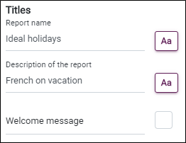
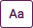
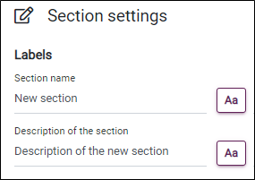
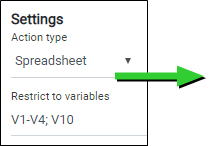
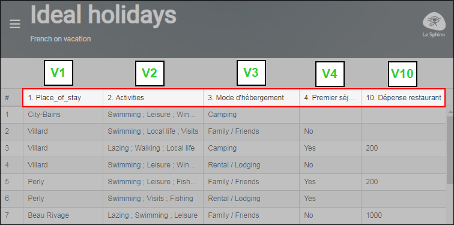
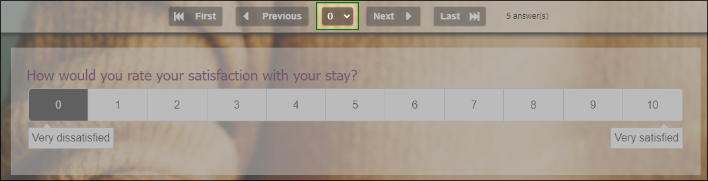
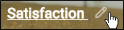

Design a report
Prepare a detailed report to share with your collaborators by giving them the opportunity to view the results of studies and dashboards built in real time.

To design a report, go to the Reporting section, Design tab.
From the design environment, you can:
 SETUP THE DESIGN OF THE REPORT
SETUP THE DESIGN OF THE REPORT
The report design consists of three parts:
-
Titles: The name of the report, description of the report and the welcome message.

-
Click in the text box corresponding to each title to rename it.
-
Click on the button

to change the font, size (in px) and color of each title.The name & description of the report are displayed in the sidebar.
-
- Header:
- Content:
Define a background color or a custom background by importing an image from your computer or from the image gallery at your disposal.


 ADD A NEW SECTION
ADD A NEW SECTION
To add a section, proceed as follows:
-
Click on the text "+ Add a section" located at the bottom of the report.
-
Give a name to the new section and add a description if necessary from the section's parameter window.
-
(optional) Click the button to change the font, size (in px) and color of the name / description of a topic.


You can change the order in which topics are displayed by drag & drop. To do this:
-
Hover over the icon
 and move the topic.
and move the topic.Click on the image above for an animated preview
-
To delete a section, click the button .

 ADD A NEW ACTION
ADD A NEW ACTION
To add a new action in the selected section :
-
Click + Add an action.
NOTE: It is possible to automatically generate as many actions as Dataviv' views, to do this:
Click on then select the study and view to be used.
then select the study and view to be used. -
Give a name to the new action and add a description if necessary from the action setting window.
-
(optional) Click on the button to change the font, size (in px) and color of the name / description of an action.
-
Then choose the type of action to be used:
Display a view, display the spreadsheet (data), view observations or display a Web page.
DISPLAY A VIEW
This action displays a view containing your various analyses.
-
Select the Board action from the Action type drop-down menu.
-
Select the study containing the view to be displayed.
-
Select the view to display from the Board to display drop-down menu.
-
Select the page to be displayed.
All the pages in the view will be displayed by default.
DISPLAY THE SPREADSHEET
This action displays the data from your study.
-
Select the Spreadsheet action from the Action type drop-down menu.
-
(optional) Define the variables you wish to display by clicking on
 or by manually entering the variable number separated by ;.
or by manually entering the variable number separated by ;.EXAMPLE: We would like to display only the variables V1, V2, V3, V4 and V10 in this case we write: V1-V4;V10.


NOTE: All survey variables will be displayed in the spreadsheet by default.
-
Set the spreadsheet's advanced options.
-
customize display: (row and variable numbers, labels....) .
-
Set permissions: give the possibility to add, modify or delete observations, download the data file or consult the downloaded files in the case of a document upload question.
-
Access the data entry form.
-
Tick the Enable box, select the form to be displayed and the access mode View or Modify.
-
CONSULT THE RECORDS
This action allows the user to view or modify observations one by one.
-
Select the Consult the records action from the Action type drop-down menu.
-
Select the input form to be used from the Form drop-down menu.
-
Select the type of access to be given: allow the user to modify the observations by ticking the Modify option or to view the observations by ticking the Consult option.
-
(optional) Define a variable according to which the observations will be listed.
EXAMPLE: Listing observations according to the satisfaction rating given will enable you to quickly identify and access observations from dissatisfied respondents.

NOTE: Observations are listed by their number by default.
-
(optional) Give the user the option of printing the observations by ticking the Print option and/or deleting them by ticking the Delete option.
NOTE: Observations can only be deleted when the View observations action is set to modify.
DISPLAY A WEB PAGE
This action displays a page on a website.
-
Select the Show a web page action from the Action type drop-down menu.
-
Insert the URL of the web page you want to link to.
-
Select the target when you click on the action: open in the current page, in a new tab or replace the page.
NOTE: Some web pages do not allow their integration (if displayed on the current page).
-
-
(optional) customize the style of an action.
-
Choose the card size of the action: Small or large.
-
Add a logo if necessary, to do this click on the + button.
-
Set a background color or custom background by importing an image from your computer.
-
Display of labels : Choose how the labels will be displayed (Permanent display, Appear on hover, or Disappear on hover).
-


 CREATE A NEW REPORT
CREATE A NEW REPORT
You can create a new report or duplicate an existing one.
-
To create a new report, click on .
-
To duplicate a report, click on
 .
. -
To rename a report, place the cursor on the name and click on the pencil.

These actions can also be performed from the list of reports.